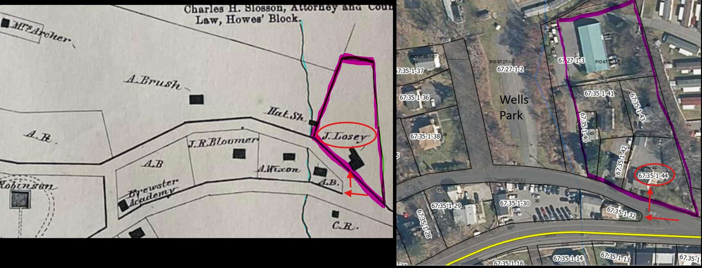
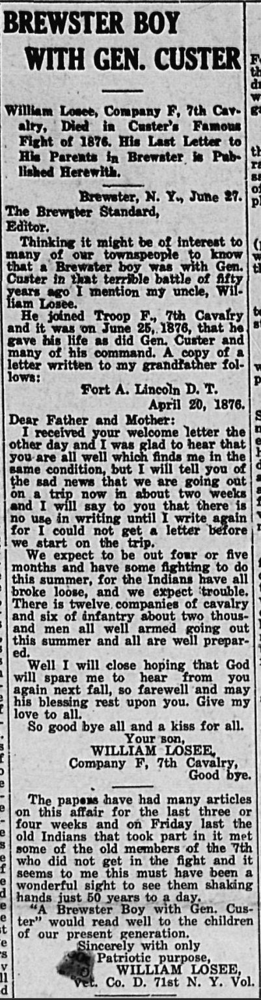
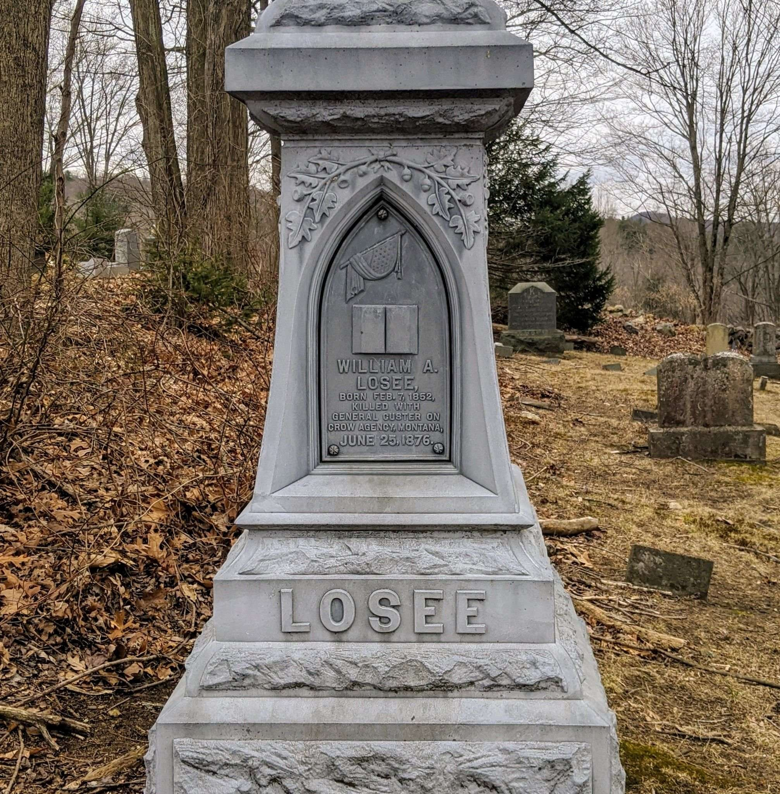
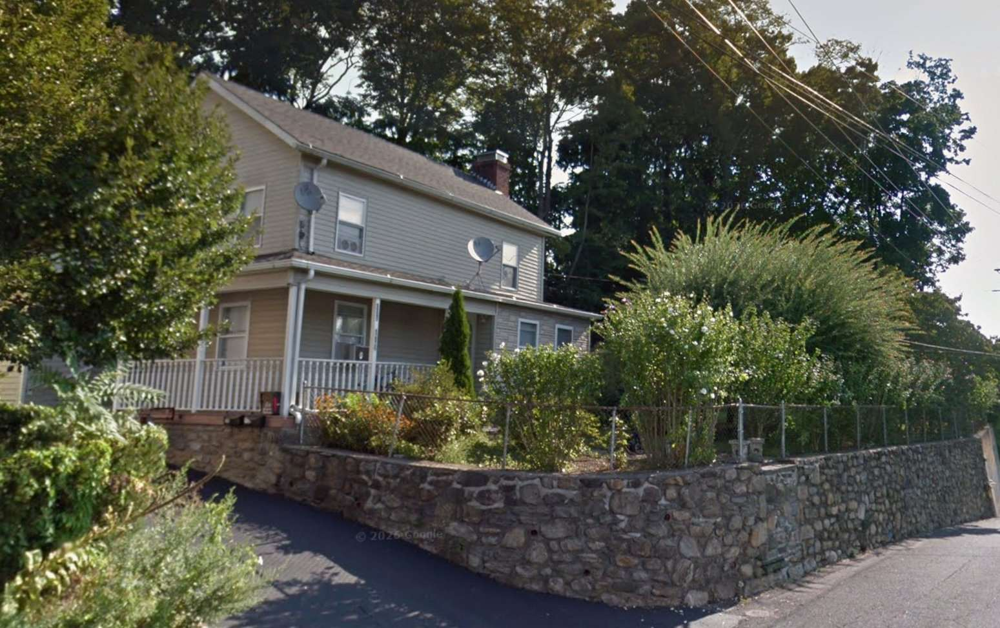

The Losee Homestead
Identifying the Brewster boyhood home of a 7th Cavalry trooper killed at the Little Bighorn.
I. The Question, and the Answer
This narrative documents the identification of the Brewster, New York lot where William A. Losee grew up. William died with Custer’s 7th Cavalry at the Battle of the Little Bighorn on June 25, 1876, at the age of twenty-four — the only documented Brewster resident known to have died there. He left no descendants and no surviving photograph. What survives is the land he walked, the deeds that name his father, the federal census records that placed him in this house at every enumeration from age eight to age eighteen, the 1867 Beers, Ellis & Soule village plate of Brewsters Station, and three Brewster Standard newspaper items — a July 1876 dispatch, his father Joseph’s 1899 obituary, and a 1926 remembrance written by his nephew — that together establish the family’s identity and presence on the parcel beyond reasonable doubt.
William’s home is today the property at the eastern point of the fork where Oak Street meets Main Street — modern 110–114 Oak Street. The chain of title runs unbroken from Albert Brush’s 1854 sale to Joseph Losee through to the current owners. Every deed in the chain recites the 1854 Brush iron-ore reservation; that single clause survives as a 170-year paper fingerprint tying the modern parcel directly to the deed Joseph Losee signed for his three acres in the spring of 1854.
A separate house at 88 Oak Street, west of Wells Park, is sometimes locally identified as the Losee home. It is not. The case for the documented site of the Losee homestead at 110–114 Oak Street — and the case against the 88 Oak Street property as a candidate — are developed in the sections that follow.
II. Who William Was
William Losee was born February 7, 1852 in Brewster, the son of Joseph Losee (1818–1899) and Phebe Ann Garnsey Losee (1821–1900). Per Joseph’s 1899 obituary in the Brewster Standard, the couple were married in 1839 and had six surviving or remembered children at the time of the obituary: Isaac (a hatter, later of Patterson), Wellington (who remained in Brewster), Josephine (who married George Charter of Brewster), William, Jane, and James L. Losee. The family also had a daughter Abbey Jane, who predeceased Joseph by 28 years and is memorialized on the family monument in the Old Methodist Cemetery. Jane and James both died in December 1898, just three months before Joseph’s own death in March 1899; the 1899 obituary names only Isaac, Wellington, and Josephine as surviving siblings of the deceased Joseph.

Joseph’s biography matters for the identification of the house. He was born in Yorktown, New York on October 16, 1818, son of Samuel and Hannah Losee. He lived for some years in Peekskill and Somers and served as a New York City policeman before moving to Brewster around 1844, more than fifty years before his death. His marriage to Phebe Ann Garnsey in 1839 tied him into established Brewster families — Phebe’s family surname appears in the 1854 Brush deed as the family of the eastern-boundary neighbor, Nathaniel Garnsey.
After settling in Brewster Joseph began building stone walls by contract; the work was so physically demanding that a strain he sustained in middle age caused permanent damage to his legs — a numbness and inability to raise his feet from the ground — that contributed to his death thirty years later. The stone-mason trade is taken up again in Section IX in connection with the surviving wall at the Losee parcel.
III. William’s Death at the Little Bighorn
William enlisted in the United States Army and was assigned to Company F of the 7th Cavalry under Lieutenant Colonel George Armstrong Custer. He was killed at the Battle of the Little Bighorn on June 25, 1876, age twenty-four. His death was first reported in the Brewster Standard on July 7, 1876 — twelve days after the battle, when the family in Brewster did not yet know his fate.

Fifty years later, in 1926, William’s nephew published a remembrance in the Brewster Standard titled “Brewster Boy with Gen. Custer.” The article reproduced William’s last surviving letter home — written from Fort Abraham Lincoln in the Dakota Territory on April 20, 1876, two months and five days before he died. The letter is the only surviving voice we have of William himself.

Dear Father and Mother:
I received your welcome letter the other day and I was glad to hear that you are all well which finds me in the same condition, but I will tell you of the sad news that we are going out on a trip now in about two weeks and I will say to you that there is no use in writing until I write again for I could not get a letter before we start on the trip.
We expect to be out four or five months and have some fighting to do this summer, for the Indians have all broke loose, and we expect trouble. There is twelve companies of cavalry and six of infantry about two thousand men all well armed going out this summer and all are well prepared.
Well I will close hoping that God will spare me to hear from you again next fall, so farewell and may his blessing rest upon you. Give my love to all.
So good bye all and a kiss for all.
Your son, WILLIAM LOSEE, Company F, 7th Cavalry, Good bye.
Two months later the 7th Cavalry was on the Little Bighorn. William was twenty-four.
The postmark — Fort A. Lincoln, Dakota Territory — and the return address to Joseph and Phebe in Brewster fix William at exactly the household established by the 1854 Brush deed. The house they had on the fork at the old highway in Brewster is the home William was writing to, the home he hoped to return to, and the home where Joseph and Phebe received the eventual news of his death.
IV. The Family Monument — Old Methodist Cemetery, Brewster
The Losee family is buried in the Old Methodist Cemetery in Brewster. The family monument is a four-faced obelisk: each face is inscribed with a different family member — Joseph (the father), Phebe Ann (the mother), William (killed at the Little Bighorn), and Abbey Jane (the daughter who predeceased William by five years). All four are commemorated on a single LOSEE base stone.




Abbey Jane Losee — born approximately July 18, 1844, died March 21, 1871, age 26 years 8 months 3 days — was the eldest daughter of Joseph and Phebe and a sister to William. She is not named in Joseph’s 1899 obituary, which lists only the surviving and recently deceased children, but her presence on the monument confirms she was part of the household in the 1850s and 1860s, during William’s boyhood.
V. The 1854 Brush Deed — The Land Joseph Bought

On April 1, 1854 (the deed itself is dated March 16, 1854; the body text closes with April 1 as the effective date), Albert Brush and his wife Julia sold a three-acre parcel out of their larger family farm to Joseph Losee for nine hundred dollars. The Brush family owned the surrounding tract, which had itself been assembled by Albert Brush across three earlier purchases: an 1849 deed from Samuel and Eliza Brewster (Liber W, p. 201, approximately 105 acres for $6,825), an 1852 deed from Alvah Trowbridge (Liber 26, p. 554), and an 1853 deed from Francis Buckmaster (Liber 31, p. 243).
The three-acre piece Joseph bought in 1854 was carved out of this larger Brush family holding, on its southeast corner, at the fork of the old highway. The 1849 Brewster-to-Brush deed describes a two-lot tract bounded south by the Philipse–Morris patent boundary line — the colonial-era survey line dividing the 1697 Philipse Patent from the adjacent Morris Patent — anchoring the chain to one of the foundational land grants of the lower Hudson Valley. The iron-ore reservation that propagates through every subsequent deed in this chain originates with Samuel Brewster in that 1849 conveyance, not with Albert Brush; Brush carried forward Brewster’s reservation when he sold to Losee in 1854, and every owner since has done the same.
The 1854 deed locates the parcel precisely. It begins “at the East side of a bridge near a walnut tree” over a brook crossing the old highway. The brook is the creek that still shows on some maps today, forming the eastern edge of Wells Park. The “old highway” — referenced in nearly every subsequent deed in the chain — is identified as Oak Street in the 1904 Eva V. Weed deed, which states explicitly that the boundary begins “at the east side of a bridge over a brook crossing the old highway, now called Oak Street.”
From the bridge the boundary ran north along the brook, then east along the Brush family farm boundary, then south along Nathaniel Garnsey’s land back to the road. The deed reserves all mining rights and privileges, particularly for iron ore — a reflection of the active iron mining industry in 19th-century Putnam County. The same 1854 acquisition year saw Joseph join the Monkeytown Methodist Episcopal Church — both formal commitments to settling permanently in Brewster.
VI. The Brewsters Station Village Plate — “J. Losey” at the Fork

Where Section I established the conclusion, the close detail of the village plate proves it. The label “J. Losey” sits precisely at the fork of the old highway (now Oak Street) in the exact position that today’s 110–114 Oak Street parcel occupies on the modern tax map. Immediately west, the “Hat. Sh.” label identifies the workplace that the 1870 census records for William — then 18 and enumerated as a hat shop worker, in a dwelling adjacent to Howard Lansden, the hatter who was almost certainly the shop’s proprietor. William’s older brother Isaac had been enumerated at the same trade a decade earlier. The shop was a short walk from the Losee front door.
The surrounding labels root the parcel in its 19th-century context. “A. Brush” north of the lot names Albert Brush, the seller who had conveyed the three acres to Joseph in 1854 and who retained the surrounding farm. “A. Wixon” south and west names Alvah Wixon, the village miller whose mill stood on the creek; his farm was the Losees’ western neighbor across the brook.
VII. The Census Records — Four Decades of the Family at the Fork
Federal census records confirm Joseph and Phebe Losee resided continuously at this location from 1854 through Joseph’s death in 1899. The census enumerators in Brewster walked from house to house in sequence, so the order of dwellings on the census page corresponds to the order of houses along the road. The Losee family’s position in the 1860, 1870, and 1880 censuses is consistently bracketed by the same neighbors — most notably Alvah Wixon, the western neighbor across the brook — confirming that the family did not move.
Joseph Losee, age 40, day laborer; Phebe Losee, age 38; and the children at home including Isaac R. (18, “Hatter”), James L. (17), Wellington (12), William (8), and Josephine (7). Alvah Wixon, the miller, enumerated two dwellings west — the same western neighbor shown on the 1867 village plate.
Joseph Losee, age 51, farm labor; Phebe Losee, age 48. William Losee, age 18, occupation “Works in Hat Shop” — the workplace mapped on the 1867 village plate. This is the last federal census enumeration that includes William; by 1880 he had been dead four years.
Joseph Losee, age 61, retired; Phebe Losee, age 57. Adjacent dwellings include the John Steers family with son-in-law Samuel H. Brown — the same Samuel H. Brown who would later purchase multiple parcels from the Losee heirs in 1906. Two dwellings west, Alvah Wixon (62) and his wife are still listed as the family’s western neighbor, exactly as in 1860 — twenty years of stability at the same location.
VIII. The Complete Chain of Title — 1854 to 2000
Every deed in the chain below recites back to the previous conveyance, ultimately citing Joseph Losee’s 1854 acquisition from Albert Brush, and every deed carries forward the original iron-ore reservation.
| Date | Grantor → Grantee | Liber/Page | Notes |
|---|---|---|---|
| Apr. 1, 1854 | Albert & Julia Brush → Joseph Losee | Z / 555 | $900; 3 acres; the foundational deed. |
| Apr. 1, 1895 | Joseph & Phebe Losee → Walter W. Weed | 77 / 57 | $4,000; Losees leave the property after 41 years. |
| Jan. 19, 1899 | Walter W. Weed dies → Eva V. Weed (sole heir) | — | Property passes by inheritance, not by deed. |
| Jan. 19, 1904 | Eva V. Weed → Herbert M. Turner | 91 / 441 | $3,600; five years to the day after her father’s death. |
| Apr. 2, 1906 | Herbert M. Turner → Nichols & Adams firm | 95 / 8 | Real estate firm; subdivides the 3-acre tract via deeds to Wright (1912), Winship (1913), Van Scoy (1914), Rogers (1918). |
| Feb. 2, 1912 | Nichols & Adams → Edward & Rose Wright | 104 / 371 | Eastern wedge with house — today’s parcel 44. |
| Apr. 1, 1926 | Emma Ekstrom (widow) → Mary O. Ganung & Sarah C. Holmes | 135 / 384 | Inheritance-related conveyance. |
| Nov. 20, 1934 | Ganung & Holmes → Harry W. & Carrie B. Ga Nun | 201 / 68 | Same family, name spelled differently. |
| Apr. 2, 1941 | Ga Nun → Putnam County Savings Bank | 254 / 354 | Depression-era foreclosure. |
| Aug. 14, 1943 | Putnam County Savings Bank → Amanda Prisco | 275 / 455 | Wartime sale. |
| Jan. 22, 1957 | Louis Prisco → John & Margaret Coughlin | 485 / 19 | Family conveyance through Amanda’s son. |
| 1983 | Coughlin → Doane C. Comstock | 789 / 200 | Last single-family-owned conveyance for decades. |
| — | Comstock → Oak Street Associates Inc. | 1298 / 337 | LLC-style holding. |
| — | Oak Street Associates → Steven Maguire | 1361 / 204 | Reverts to individual owner. |
| Dec. 29, 2000 | Steven Maguire → Current owner | — | Current owner. |
The 1895 sale by Joseph and Phebe Losee to Walter W. Weed marks the family’s departure from the parcel after forty-one years. Joseph was 76 and Phebe 74; they sold for $4,000 cash plus the assumption of two existing mortgages. Walter W. Weed was a Patterson-area resident with substantial means. He died less than four years later on January 19, 1899 — just two months before Joseph Losee’s own death on March 15, 1899 — and the parcel passed to his daughter and sole heir Eva V. Weed. On January 19, 1904, exactly five years to the day after her father’s death, Eva conveyed the parcel to Herbert M. Turner of Patterson for $3,600. Turner held it briefly and in 1906 conveyed the full three-acre tract to the Nichols & Adams real estate firm, who subdivided it into multiple lots between 1906 and 1912. The eastern wedge with the existing house was sold to Edward and Rose Wright in 1912 — this is the parcel that became today’s lot 44 (110–114 Oak Street).
IX. The House at 110–114 Oak Street

The form distinguishes the house from the gable-front Victorian houses on adjacent parcels, all of which were built by early purchasers after the 1906–1912 subdivision of the original three-acre tract. The most reasonable inference is that the house predates that subdivision — meaning it predates 1906 and likely predates 1895, when Joseph and Phebe sold the parcel to Walter W. Weed. It appears, in other words, to be the original Losee family home, possibly with later additions and renovations, but substantially the structure William grew up in.
The fieldstone retaining wall has no architectural “date,” but it is exactly the kind of work Joseph Losee did for a living. His 1899 obituary states that after settling in Brewster he “began to build stone walls by contract, and it was while engaged in this work that he sustained a strain which was an indirect cause of his death.” Stone walls built by skilled masons in the 1850s–1870s using local fieldstone often outlast the wooden houses behind them by a century or more. There is no documentary proof that this specific wall was laid by Joseph himself, but it stands on his land, in the place his trade would have placed it, in the form his trade would have built. Of all the physical features on the parcel, the wall is the most likely surviving artifact of the Losee family’s forty-one-year tenure.
X. Why It Is Not the House at 88 Oak Street
A separate house at 88 Oak Street — a cream-painted gable-front structure with prominent paired bracketed eaves — has been locally identified by some as the Losee home. Two things rule that out: the geography and the chain of title. The house sits west of the brook that formed Joseph Losee’s western boundary in the 1854 deed; the Losee parcel was east of the brook. And the parcel’s ownership history shows no Losee in the chain at any point.


Chain of Title for 88 Oak Street
| Year | Grantor → Grantee | Liber/Page |
|---|---|---|
| 2006 | Barry E. Nesson → (current owner) | — |
| 1993 | (prior owner) → Barry E. Nesson | 1216 / 48 |
| 1984 | Barbara J. King → George Fraioli & Lawrence Cullen | 824 / 336 |
| 1981 | B & J King, Inc. → Barbara J. King | 780 / 1193 |
| 1971 | Robert Lewmas Ward → B & J King, Inc. | 692 / 416 |
| 1968 | Robert M. & Virginia Ward → Robert Lewmas Ward | 670 / 888 |
| 1949 | Edith S. Genovese → Robert M. & C. Virginia Ward | 371 / 278 |
| 1944 | Mary O’Loughlin Bullock → Edith S. Genovese | 279 / 470 |
| 1922 | Pauline Wells McCabe et al. → Herbert A. Bullock | 124 / 430 |
| 1904 | Brush / Van Scoy heirs → Frank Wells (entire 110-acre Brush Farm) | 92 / 254 |
| 1890 | Court partition (Wood, Referee) → Jacob H. & Avery S. Brush, Sarah E. Van Scoy | 72 / 538 |
| 1849 | Samuel Brewster & wife → Albert Brush (~105 acres) | W / 201 |
The Brush family that owned this parcel through 1904 is the same Brush family that sold three acres to Joseph Losee in 1854. The two parcels touched, but they were distinct holdings: parcel 38 remained Brush land for fifty years after the Losee parcel became Losee land, and it was never any Losee’s home.
XI. Conclusion
Our lot, 110–114 Oak Street, at the eastern fork where Oak Street meets Main Street in the Village of Brewster, is the documented site of the William Losee family home. Five independent strands of evidence converge on the same conclusion:
— an unbroken chain of title from 1854 to today, with the original deed’s iron-ore reservation carrying through every conveyance
— the 1867 Beers village plate labeling Joseph’s house at this exact fork
— three federal censuses placing the family at the same dwelling between 1860 and 1880
— William’s 1876 letter home addressed to Joseph and Phebe at this address
— the family monument in the Old Methodist Cemetery commemorating William’s death at the Little Bighorn alongside his sister Abbey Jane
The house at 88 Oak Street, west of Wells Park, is on land that was Brush family farm property from 1849 through 1904 — never Losee land. It is a real and beautiful piece of Brewster’s 19th-century architectural heritage, but it was most likely a Brush family house, not a Losee one.
William A. Losee — born February 7, 1852, killed at the Little Bighorn on June 25, 1876, age twenty-four — grew up at 110–114 Oak Street. He left from there for the Army in his early twenties and never returned. His last letter home is the only document I found in his own voice.
Sources Consulted
- Liber Z, p. 555 — Albert & Julia Brush to Joseph Losee, March 16, 1854. $900; 3 acres. The foundational deed; reserves iron-ore mining rights.
- Liber 77, p. 57 — Joseph & Phebe Ann Losee to Walter W. Weed, April 1, 1895. $4,000 plus assumption of two prior mortgages.
- Liber 91, p. 441 — Eva V. Weed to Herbert M. Turner, January 19, 1904. Confirms the old highway is “now called Oak Street.”
- Liber 95, p. 8 — Turner to Nichols & Adams firm, April 2, 1906.
- Liber 104, p. 371 — Nichols & Adams to Edward & Rose Wright, February 2, 1912. The eastern wedge with the existing house — today’s tax parcel 67.35-1-44.
- Liber W, p. 201 — Samuel Brewster & Eliza S. to Albert Brush, August 15, 1849. Foundational deed for the larger Brush Farm; ~105 acres; $6,825. The first lot is bounded south by the Philipse–Morris patent boundary line.
- Liber 72, p. 538 — William Wood, Referee, to Jacob H. Brush, Avery S. Brush & Sarah E. Van Scoy, July 21, 1890. Court-ordered partition of the Brush Farm; names Joseph Losee as boundary neighbor.
- Liber 92, p. 254 — Brush / Van Scoy heirs to Frank Wells, July 14, 1904. Brush Farm leaves Brush family ownership.
- Liber 279, p. 470 — Mary O’Loughlin Bullock to Edith S. Genovese, January 27, 1944. Key 88 Oak Street link; explicitly recites “a portion of the so-called Brush Farm.”
- July 7, 1876 — First local notice of William’s involvement at the Little Bighorn, published twelve days after the battle.
- March 1899 — Obituary of Joseph Losee. Establishes his full biography and confirms William’s death.
- June 1926 — “Brewster Boy with Gen. Custer.” Fiftieth-anniversary remembrance written by William’s nephew. Reproduces William’s last surviving letter.
- 1860 U.S. Federal Census, Town of Southeast, Putnam County, NY. Joseph Losee (40, day laborer), Phebe (38), Isaac R. (18, hatter), James L. (17), Wellington (12), William (8), Josephine (7). Alvah Wixon two dwellings west.
- 1870 U.S. Federal Census. Joseph Losee (51), Phebe (48), William (18, “Works in Hat Shop”). Howard Lansden (35, hatter) listed in the immediately adjacent dwelling.
- 1880 U.S. Federal Census. Joseph Losee (61, retired), Phebe (57). Adjacent: John Steers family with son-in-law Samuel H. Brown; two dwellings west, Alvah Wixon (62).
- Losee family monument, Old Methodist Cemetery, Brewster, Putnam County, New York. Multi-faced obelisk bearing inscriptions to Joseph, Phebe Ann, William A. (“Killed with General Custer on Crow Agency, Montana, June 25, 1876”), and Abbey Jane Losee. Find A Grave cemetery memorial: findagrave.com/cemetery/2254507/old-methodist-cemetery.
- Beers, F. W., A. D. Ellis & G. G. Soule, Atlas of New York and Vicinity (1867). Village plate of Brewsters Station, Town of South East, Putnam Co., NY. Labels “J. Losey” at the fork and “Hat. Sh.” immediately west.
- Putnam County Tax Map and GIS — Section 67.35, Block 1, Lot 44.
- Putnam County Clerk’s Office, Carmel, NY — deed books from Liber A onward (1812 to present).
Research by Rob G. · A Property History